Rate Schedules
Hammel is primarily built around various “rate schedules” that define the frequency with which events happen to the people within the simulation. Table 1 describes all six available rate schedules along with additional information.
| Rate process | Age/duration bands1 | Required strata | Optional strata | Can vary by time?2 |
|---|---|---|---|---|
| Fertility | age | none | groups; union type; parity bands3 | yes |
| Mortality | age | sex | groups | yes |
| Union formation (mate search) | age or duration | none | groups; previous union | yes |
| Union dissolution | duration | none | partner groups; union type | yes |
| Cohabitation-to-marriage conversion | age or duration | none | groups | yes |
| Group transitions | age or duration | origin; destination | other groups; sex; union type | yes |
| 1 Bands are half-open [start, end), measured in years. Use age_start/age_end or dur_start/dur_end. Joint age-by-duration surfaces are not supported. | ||||
| 2 Stratify rates by half-open [time_start, time_end) intervals to allow for variation in rates over time. | ||||
| 3 Parity bands use half-open [parity_start, parity_end) intervals and describe current maternal parity. | ||||
Fertility and mortality are required in all simulations, and some process is required for union formation although it may or may not require a rate schedule (more on that below).
At its core, each rate schedule is a dataset with at least three variables:
-
age_start/age_endordur_start/dur_endvariables which define the age/duration bands for the rate schedules. - A
ratevariable that defines the hazard rate of the event within the age/duration band, specified in terms of events per person-year (or union-year) lived.
Here is an example of a rate schedule for US fertility in 2000, provided with the package:
usa_2000_fertility
#> # A tibble: 6 × 3
#> age_start age_end rate
#> <int> <int> <dbl>
#> 1 15 20 0.0477
#> 2 20 25 0.110
#> 3 25 30 0.114
#> 4 30 35 0.0912
#> 5 35 40 0.0397
#> 6 40 45 0.008Importantly, rates may be stratified by additional variables as described in Table 1. This stratification allows for much more detailed and complex microsimulation. We will return to this feature below, but first a simple example will establish the basic workflow for simulating populations with hammel.
A Simple Example
For this example, we will use only static fertility and mortality rates defined across the entire population. The package comes with age-specific fertility and mortality rates for the US in 2000. We can use the calculate_tfr and calculate_life_expectancy functions to see the implied total fertility rates and life expectancy at birth from these rate schedules.
calculate_tfr(usa_2000_fertility)
#> # A tibble: 1 × 3
#> age_start age_end tfr
#> <int> <int> <dbl>
#> 1 15 45 2.05
calculate_life_expectancy(usa_2000_mortality)
#> # A tibble: 2 × 3
#> sex age ex
#> <chr> <int> <dbl>
#> 1 f 0 79.4
#> 2 m 0 74.0US fertility in 2000 was at about replacement level given the high life expectancy, which should lead to a roughly stationary population if these rates were held constant over time.
To run a simulation with these rate schedules, we first need to create an empty hammel_model object and then attach the fertility and mortality processes to it. The functions for building this model are set up to use a piping interface.
model <- hammel_model() |>
set_fertility(usa_2000_fertility) |>
set_mortality(usa_2000_mortality)Now, we have a basic simulation model set up. However, we still need two additional components before we are ready to simulate. The model requires some process for union formation and it requires a starting population.
Lets tackle union formation first. For this simple example, we are going to forgo a full rate schedule and instead use the “on_demand” method of union formation. This method simply creates a union whenever a currently unpartnered woman has a birth. In effect, it treats every marriage as a “shotgun wedding.” This is not a realistic model of union formation, but it may be sufficient for many types of simulation where the goal does not require accurate union formation simulation (e.g. kinship reconstruction).
model <- model |>
set_union_formation("on_demand")Now we can set up a starting population. To do this, we will use the genrate_uniform_population function which generates a population uniformly distributed within some age range. This will not produce realistic population age distributions, but allows us to get a foothold for the simulation. In most cases, users will want to start a simulation with a “burn in” period to allow this uniform distribution to become a stable population.
pop_initial <- generate_uniform_population(50000, max_age = 70, end_time = 0)
model <- model |>
set_population(pop_initial)The pop_initial object is a hammel_population that includes several elements:
str(pop_initial)
#> List of 3
#> $ persons : tibble [50,000 × 6] (S3: tbl_df/tbl/data.frame)
#> ..$ person_id : int [1:50000] 1 2 3 4 5 6 7 8 9 10 ...
#> ..$ sex : chr [1:50000] "f" "f" "m" "m" ...
#> ..$ birth_time: num [1:50000] -45.4 -41.1 -33.9 -64 -69.9 ...
#> ..$ death_time: num [1:50000] NA NA NA NA NA NA NA NA NA NA ...
#> ..$ mother_id : int [1:50000] NA NA NA NA NA NA NA NA NA NA ...
#> ..$ father_id : int [1:50000] NA NA NA NA NA NA NA NA NA NA ...
#> $ unions : tibble [0 × 6] (S3: tbl_df/tbl/data.frame)
#> ..$ union_id : int(0)
#> ..$ wife_id : int(0)
#> ..$ husband_id: int(0)
#> ..$ start_time: num(0)
#> ..$ end_time : num(0)
#> ..$ end_reason: chr(0)
#> $ end_time: num 0
#> - attr(*, "class")= chr "hammel_population"The persons tibble is the key element as it defines our existing population of 10,000 people. The unions tibble is empty because the entire population starts unmarried (expect a lot of weddings in the first few years!). The end_time numeric value is important because it defines the starting time for the simulation. I have set it to zero here so that the origin point of our simulation is time zero. Users who want more detailed starting populations can recreate this structure by hand.
We are now ready to run the simulation with the run_simulation function. I will also time it with the tictoc package.
tic()
pop_end <- run_simulation(model, years = 100, seed = 42)
toc()
#> 0.882 sec elapsedPretty fast! Lets look at its structure.
str(pop_end)
#> List of 6
#> $ persons : tibble [121,579 × 6] (S3: tbl_df/tbl/data.frame)
#> ..$ person_id : num [1:121579] 1 2 3 4 5 6 7 8 9 10 ...
#> ..$ sex : chr [1:121579] "f" "f" "m" "m" ...
#> ..$ birth_time: num [1:121579] -45.4 -41.1 -33.9 -64 -69.9 ...
#> ..$ death_time: num [1:121579] 39.3 26.2 51.2 21.2 24.3 ...
#> ..$ mother_id : num [1:121579] NA NA NA NA NA NA NA NA NA NA ...
#> ..$ father_id : num [1:121579] NA NA NA NA NA NA NA NA NA NA ...
#> $ unions : tibble [33,742 × 6] (S3: tbl_df/tbl/data.frame)
#> ..$ union_id : num [1:33742] 1 2 3 4 5 6 7 8 9 10 ...
#> ..$ wife_id : num [1:33742] 27244 46788 26192 18379 30294 ...
#> ..$ husband_id: num [1:33742] 29525 11269 24579 40836 4584 ...
#> ..$ start_time: num [1:33742] 0.000894 0.001535 0.001645 0.003342 0.003843 ...
#> ..$ end_time : num [1:33742] 34 24.7 16.1 36.9 30.2 ...
#> ..$ end_reason: chr [1:33742] "death_husband" "death_husband" "death_husband" "death_husband" ...
#> $ end_time : num 100
#> $ simulation :List of 4
#> ..$ start_time : num 0
#> ..$ end_time : num 100
#> ..$ birth_interval: num 0.75
#> ..$ ffab : num 0.489
#> $ unrealized_births: tibble [0 × 5] (S3: tbl_df/tbl/data.frame)
#> ..$ period_start : num(0)
#> ..$ period_end : num(0)
#> ..$ age_start : num(0)
#> ..$ age_end : num(0)
#> ..$ unrealized_births: num(0)
#> $ unrealized_since : num 0
#> - attr(*, "class")= chr "hammel_population"Note that the output of the simulation is a hammel_population object with the same basic structure as pop_initial as well as some additions. Importantly, the output of one simulation can be the input for another simulation. So, I could continue this simulation by setting pop_end as my new starting population in the model.
I can use some nice convenience functions to analyze my simulation results. The first thing that I will do is look at population size over time.
pop_end |>
calculate_population_size(0:100) |>
ggplot(aes(x = time, y = population)) +
geom_line()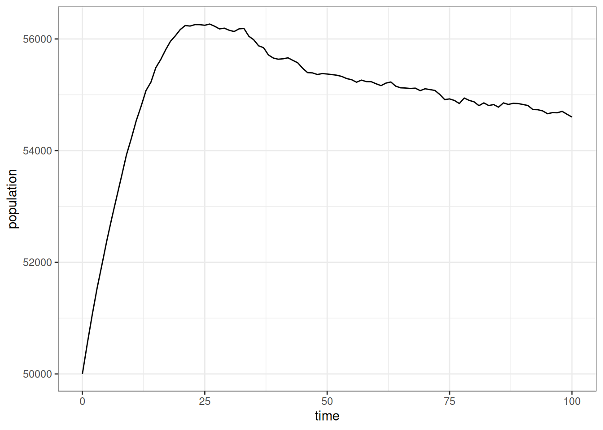
Initially, the population grew rapidly due to the unusual age distribution, but then it leveled off into a slowerm, fairly constant growth rate that suggests a stable population. I can look at that population growth rate more directly.
pop_end |>
calculate_population_size(0:100) |>
mutate(growth = log(population / lag(population))) |>
ggplot(aes(x = time, y = growth)) +
geom_line() +
geom_smooth(se = FALSE)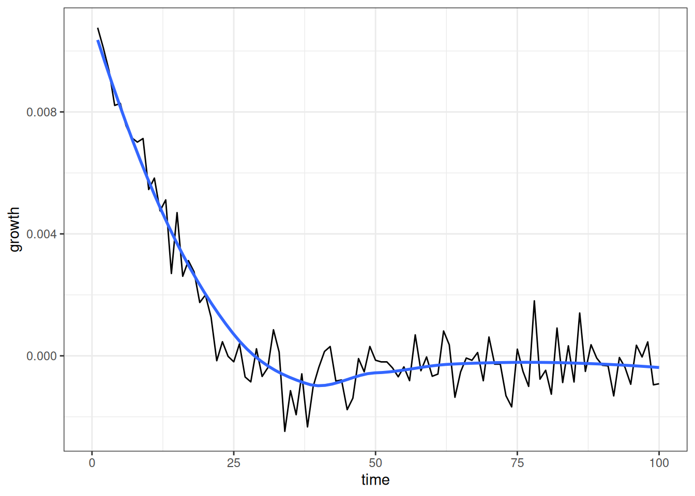
Figure 2 shows that the annual growth rate quickly drops from a positive rate to something very close to zero as we approah not only a stable population, but one that is largely stationary.
Do the age-specific fertility and mortality rates from the simulation match our expectations? We can check this with calculate_fertility_rates and calculate_mortality_rates. These functions are part of a family of functions that calculate rates from the events and person/union-years lived within lexis triangles, based on the simulation history.
Lets first look at fertility rates.
calculate_fertility_rates(
pop_end,
# do the whole simulation as one time group
time_breaks = c(0, 100),
# use the same age breaks as input rates to compare
age_breaks = seq(15, 45, 5),
conf_level = 0.95
)
#> # A tibble: 7 × 10
#> time_start time_end sex age_start age_end person_years births rate_fertility
#> <dbl> <dbl> <chr> <dbl> <dbl> <dbl> <dbl> <dbl>
#> 1 0 100 f 15 20 174752. 8472 0.0485
#> 2 0 100 f 20 25 174671. 19077 0.109
#> 3 0 100 f 25 30 174730. 19959 0.114
#> 4 0 100 f 30 35 174686. 15938 0.0912
#> 5 0 100 f 35 40 174089. 6747 0.0388
#> 6 0 100 f 40 45 173308. 1386 0.00800
#> 7 0 100 f 45 Inf 1231033. 0 0
#> # ℹ 2 more variables: conf_low <dbl>, conf_high <dbl>I am using a single time period here to get pooled rates over time, but you could also split this into different time periods. I match the age breaks to my input rates. Note that it always adds an open-ended category at the end.
Lets compare these rates directly to the input rates that we provided.
calculate_fertility_rates(
pop_end,
# do the whole simulation as one time group
time_breaks = c(0, 100),
# use the same age breaks as input rates to compare
age_breaks = seq(15, 45, 5),
conf_level = 0.95
) |>
filter(age_end < Inf) |>
ggplot(aes(x = age_start + 2.5, y = rate_fertility)) +
geom_ribbon(aes(ymin = conf_low, ymax = conf_high),
color = NA, fill = "grey70") +
geom_point(size = 0.5) +
geom_line(data = usa_2000_fertility, aes(y = rate),
linetype = 2, color = "red") +
labs(x = "age", y = "age-specific fertility rate")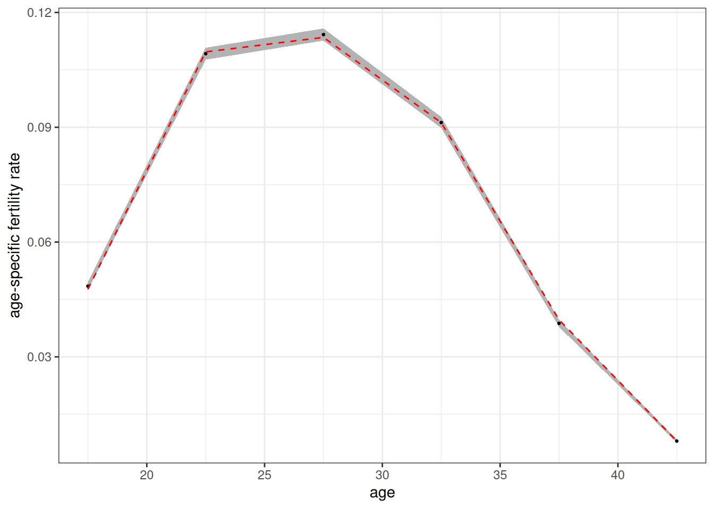
Figure 3 shows a tight fit between the estimated values (dots) and the input rates (red dotted line). The 95% confidence band is derived from the exact poisson distribution for an empirical rate.
calculate_mortality_rates(
pop_end,
# do the whole simulation as one time group
time_breaks = c(0, 100),
# use the same age breaks as input rates to compare
age_breaks = c(0, 1, seq(5, 100, 5)),
conf_level = 0.95
) |>
ggplot(aes(x = (age_start + age_end) / 2, y = rate_mortality)) +
geom_ribbon(aes(ymin = conf_low, ymax = conf_high),
color = NA, fill = "grey70") +
geom_point(size = 0.5) +
geom_line(data = usa_2000_mortality, aes(y = rate),
linetype = 2, color = "red") +
facet_wrap(~sex) +
scale_y_log10() +
labs(x = "age", y = "age-specific mortality rate")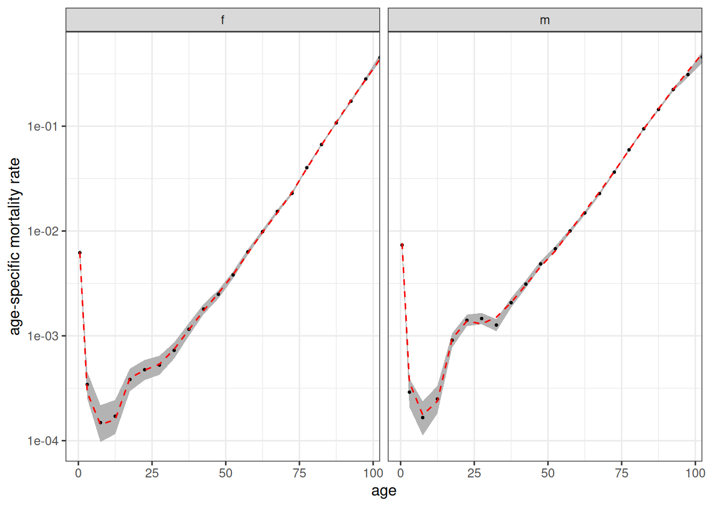
Figure 4 shows the same tight fit for mortality rates. Note that calculate_mortality_rates automatically added stratification by sex. Both of these functions also take a by argument to stratify by other variables, but at present we haven’t stratified the input rates by anything else.
Modeling Union Formation
The previous example used an “on demand” union formation method for convenience. To better model union formation, I can use a proper marriage rate schedule. Luckily, the package provides a dataset of US marriage rates circa 2000.
usa_2000_marriage
#> # A tibble: 12 × 3
#> age_start age_end rate
#> <int> <dbl> <dbl>
#> 1 15 20 0.0156
#> 2 20 25 0.0845
#> 3 25 30 0.138
#> 4 30 35 0.0987
#> 5 35 40 0.0483
#> 6 40 45 0.0482
#> 7 45 50 0.0438
#> 8 50 55 0.0251
#> 9 55 60 0.0105
#> 10 60 65 0.00724
#> 11 65 70 0.00133
#> 12 70 Inf 0.00248These are female marriage rates. Union formation is female-centric. Women decide when to search for partners and whom to choose. Future versions of the package may incorporate a proper two-sex model.
We can specify the rates by choosing “rate” as our method in set_union_formation and specifying the marriage rates in the rates argument. However, before we jump straight ahead to that, we need to also think a little about fertility. Right now fertility rates are not stratified by union_type which means there is no connection between a women’s hazard of giving birth and her union status. That was fine for the on demand method because fertility drove union formation. If we leave it as is now, union formation and fertility will be completely independent.
To correct for this, I want to stratify the fertility rates by union_type. Luckily (again), the package comes with US fertility rates in 2000 stratified by union type.
usa_2000_fertility_union
#> # A tibble: 12 × 4
#> union_type age_start age_end rate
#> <chr> <int> <int> <dbl>
#> 1 partnered 15 20 0.288
#> 2 partnered 20 25 0.216
#> 3 partnered 25 30 0.162
#> 4 partnered 30 35 0.116
#> 5 partnered 35 40 0.0481
#> 6 partnered 40 45 0.0096
#> 7 unpartnered 15 20 0.039
#> 8 unpartnered 20 25 0.0722
#> 9 unpartnered 25 30 0.0585
#> 10 unpartnered 30 35 0.0393
#> 11 unpartnered 35 40 0.0197
#> 12 unpartnered 40 45 0.005
calculate_tfr(usa_2000_fertility_union)
#> # A tibble: 2 × 4
#> union_type age_start age_end tfr
#> <chr> <int> <int> <dbl>
#> 1 partnered 15 45 4.20
#> 2 unpartnered 15 45 1.17Fertility is much higher among partnered women, as we would expect. Note, I am using a dichotomy between partnered/unpartnered that the program expects. When cohabitation is also being used, union type can also be divided into unpartnered/cohab/marriage.
Now I can set up my full model.
model <- hammel_model() |>
set_fertility(usa_2000_fertility_union) |>
set_mortality(usa_2000_mortality) |>
set_union_formation("rate", rates = usa_2000_marriage) |>
set_population(pop_initial)The model is set, so lets run it.
tic()
pop_end <- run_simulation(model, 100, seed = 42)
toc()
#> 1.151 sec elapsedLets look at population size again.
pop_end |>
calculate_population_size(0:100) |>
ggplot(aes(x = time, y = population)) +
geom_line()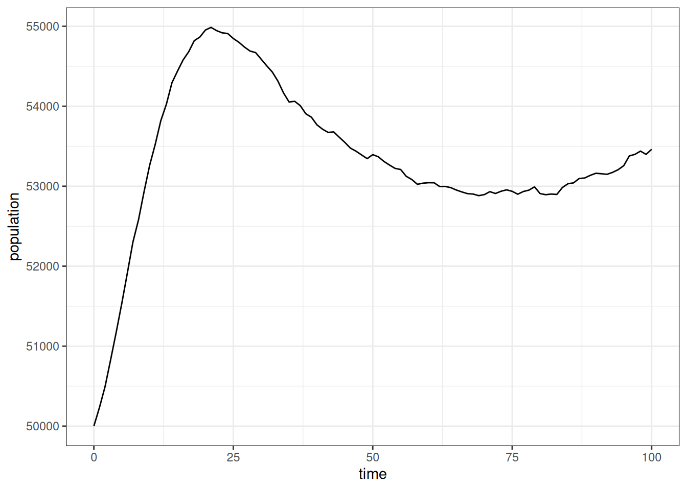
In this simulation, the population grew even faster than before and then declines a bit before leveling off to our slower growth rate. This is a consequence of starting with an entirely unmarried population. This exposure to marriage leads to a high initial overall marriage rate followed by a decline as younger cohorts age into marriage. Those marriage rates affect the level of exposure to higher partnered fertility.
To confirm this, we can look at the “crude” marriage rate in five-year increments by pooling all ages together.
calculate_marriage_rates(
pop_end,
time_breaks = seq(0, 100, 5),
age_breaks = c(0, Inf)
) |>
filter(sex == "f") |>
ggplot(aes(x = time_start + 2.5, y = rate_marriage)) +
geom_line() +
labs(x = "time", y = "crude female marriage rate")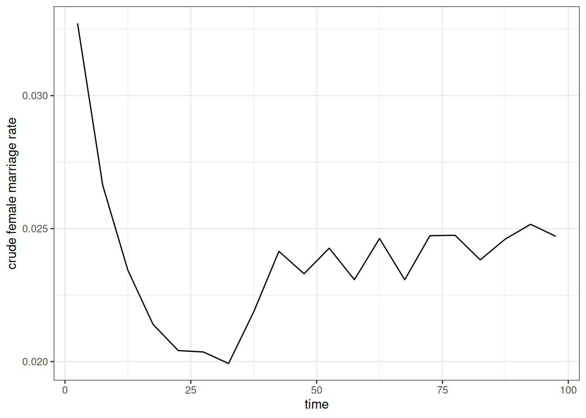
As expected, Figure 6 shows the high initial marriage rate followed by a decline before stabilizing at a somewhat higher level. We can also do the same with crude birth rates.
calculate_fertility_rates(
pop_end,
time_breaks = seq(0, 100, 5),
age_breaks = c(0, Inf)
) |>
ggplot(aes(x = time_start + 2.5, y = rate_fertility)) +
geom_line() +
labs(x = "time", y = "crude birth rate")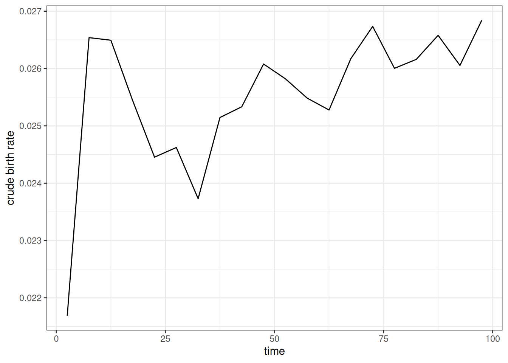
Figure 7 shows a similar pattern to the previous figure. We see the initial spike in birth rates as many women enter into unions followed by a decline that corresponds to the decline in marriage rates. This kind of dynamic is why we often use a “burn in” period to weed out the effects of the starting population before running the desired simulation.
When properly stratified by union type, the age-specific fertility rates should be consistent across the time period regardless of these issues, except for random noise. Figure 8 shows that this is true when reporting the period TFR by five year time periods, stratified by union type.
calculate_fertility_rates(
pop_end,
time_breaks = seq(0, 100, 5),
age_breaks = seq(15, 45, 5),
by = "union_type"
) |>
calculate_tfr() |>
ggplot(aes(x = time_start + 2.5, y = tfr, color = union_type)) +
geom_hline(
data = usa_2000_fertility_union |> calculate_tfr(),
aes(yintercept = tfr),
linetype = 2
) +
geom_line() +
scale_y_continuous(limits = c(0, NA)) +
labs(x = "time", y = "total fertility rate", color = "union type")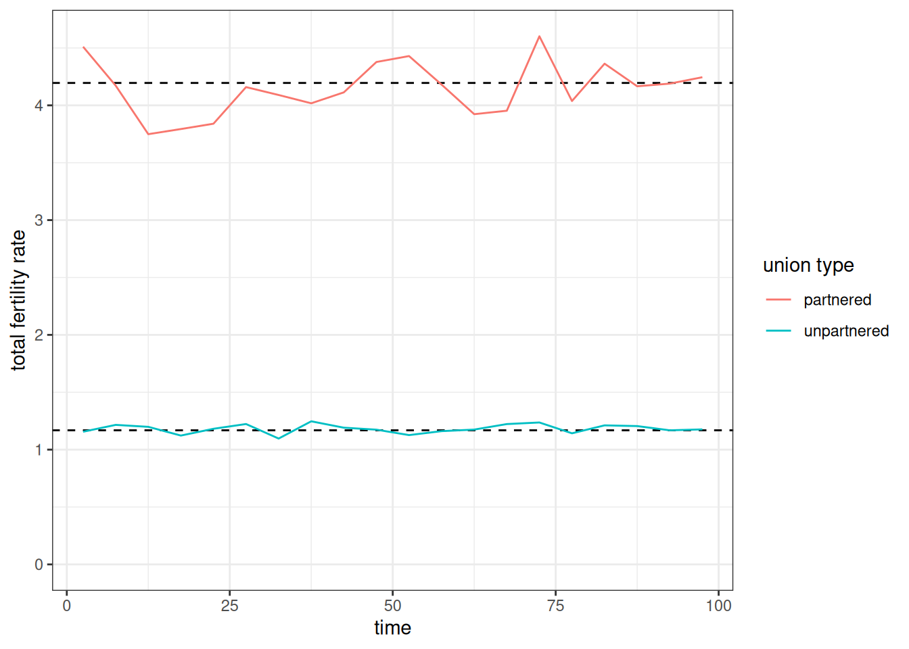
Figure 9 show that the age-specific female marriage rates estimated from the simulation also follow closely to the input rates.
calculate_marriage_rates(
pop_end,
time_breaks = c(0, 100),
age_breaks = seq(15, 70, 5),
conf_level = 0.95
) |>
filter(sex == "f") |>
ggplot(aes(x = age_start + 2.5, y = rate_marriage)) +
geom_ribbon(aes(ymin = conf_low, ymax = conf_high),
color = NA, fill = "grey70") +
geom_point(size = 0.5) +
geom_line(
data = usa_2000_marriage,
aes(y = rate),
linetype = 2,
color = "red"
)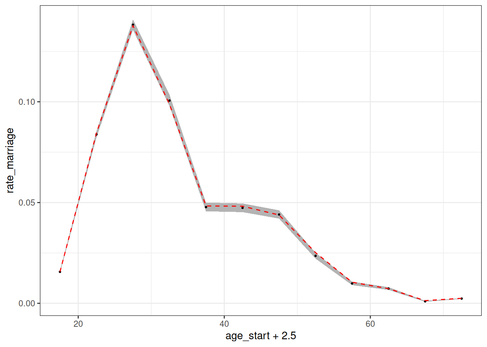
Modifying matching characteristics
To this point, I have specified when women will seek out partners, but I have not specified what kind of partners they will seek out. Are partners just chosen randomly? To examine this further, lets look at the distribution of observed age differences between partners from our simulation. To help with this, we can use the augment_unions helper function to add husband and wife characteristics to the unions data.
pop_end |>
augment_unions() |>
# subtracting birth time of husband from wife gives
# age husband - age wife
mutate(age_diff = birth_time_w - birth_time_h) |>
ggplot(aes(x = age_diff, y = after_stat(density))) +
geom_histogram(color = NA, fill = "grey70") +
geom_density(color = "red") +
geom_vline(xintercept = 0, linetype = 2) +
labs(x = "husband's age - wife's age")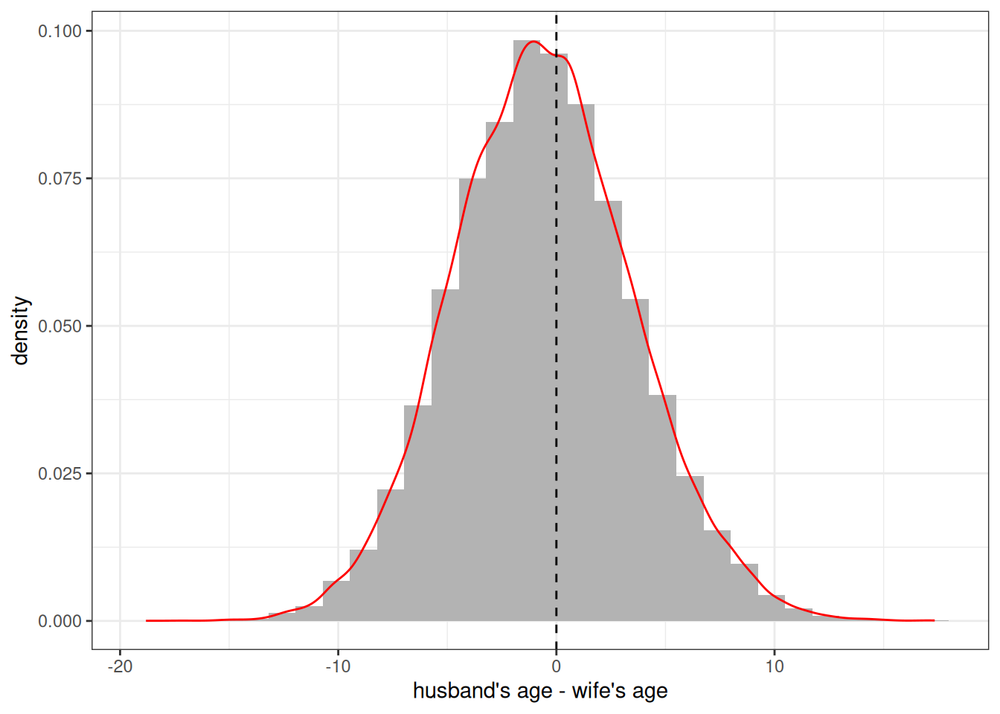
Figure 10 reveals that individuals are clearly not been chosen randomly. There is a strong tendency to marry someone of a similar age. The overall distribution itself looks (suspiciously) like a normal distribution centered on zero. This is because we have been using a default matching_model that sets the preferred age difference at 0.
The decision of how potential partners are matched on the marriage market is determined by the matching_model. The matching model implicitly uses a conditional logit model in which potential partners are sampled with weights equal to \(e^{U_{ij}}\), where \(U_{ij}\) is the utility of a match between woman \(i\) and man \(j\). All eligible men are considered by a woman when she searches for a partner. Eligibility is determined by a minimum age characteristics and degree of relatedness, both of which can be controlled within the model. The default is to exclude men under 15 and men who are first cousins or closer in terms of relatedness.
The full matching_model() function allows users full control over \(U\) through an R style formula interface with variables for partner age differences and group membership. However, for most users, the convenience function age_gap_matching_model() will be easier to use.
The idea behind the age gap matching model is to fit \(U\) by a quadratic equation where \(x\) is the age difference defined by husband’s age minus the wife’s age.
\[U = \beta_l x + \beta_q x^2\]
This defines a parabola that will be maximized at \(\beta_l/(-2 \beta_q)\). This maximum is the preferred age gap between partners. Instead of entering these \(\beta\) values directly, the age_gap_matching_model has users input two more intuitive derived values:
-
preferred_age_gap: The preferred age gap where \(U\) is maximized. -
half_weight_distance: The number of years of age difference for the value of \(U\) to be halved from the peak. This defines how quickly the parabola declines from its peak.
So, I could define a preferred age gap of 3 with a half weight of 10 years as follows:
match_model <- age_gap_matching_model(3, 5)I can then apply this matching model in my set_union_formation function and re-run the simulation.
model <- model |>
set_union_formation(
"rate",
rates = usa_2000_marriage,
matching = match_model,
min_male_age = 18
)
pop_end <- run_simulation(model, 100, 42)Figure 11 shows the resulting distribution of spousal age differences in the new simulation. The peak is now shifted upward and is close to the three year preferred age gap. The simulated data are not guaranteed to produce a peak exactly at this preferred age gap because the decision of who to marry is also conditioned by the supply of available men by age.
pop_end |>
augment_unions() |>
# subtracting birth time of husband from wife gives
# age husband - age wife
mutate(age_diff = birth_time_w - birth_time_h) |>
ggplot(aes(x = age_diff, y = after_stat(density))) +
geom_histogram(color = NA, fill = "grey70") +
geom_density(color = "red") +
geom_vline(xintercept = 3, linetype = 2) +
labs(x = "husband's age - wife's age")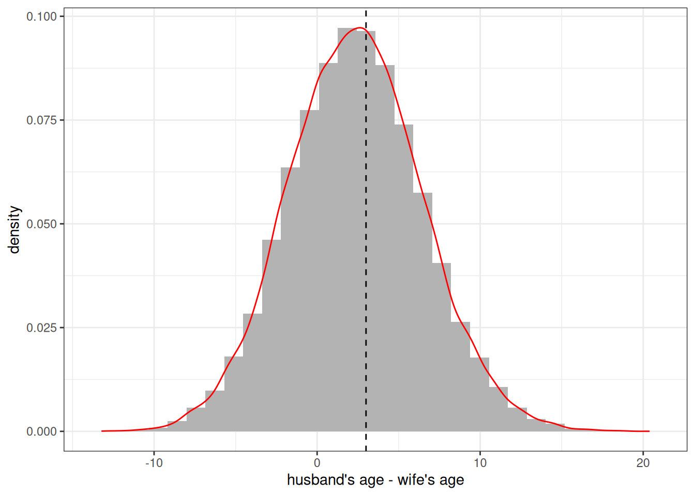
These matching models can also account for preferences that differ by the specified groups of the partners, but at the moment we have no groups to include.
Adding Groups
You can include multiple group designations into a Hammel simulation. Groups can represent any categorical distinctions between individuals. Individuals can be allowed to transition between groups with specified transition rates and inheritance rules can be defined for the assigned group of newborns. All rate schedules can also be stratified by group membership. This allows groups to stand in for a variety of dynamic situations that a user might want to simulate. A few examples:
- Ethnoracial identification with the ability to create “mixed” children
- Regional identification to model internal migration patterns
- Education to model processes of educational attainment
Because you can include multiple group designations at the same time, there is nothing to stop you from creating simulations that include all three of these examples at the same time!
Defining groups
Groups are defined by additional variables in the persons tibble of your starting population. We can add these groups with the groups argument in generate_uniform_population. One way to do this is with a named list of named numeric vectors where each name in the list corresponds to the desired group name and each name in the vector corresponds to category names. The values in the vector give relative sampling weights. For example, I could create a population evenly divided by two “race” categories of “W” and “B” with the following code.
pop_race <- generate_uniform_population(
50000,
groups = list(race = c(W = 1, B = 1))
)
table(pop_race$persons$race)
#>
#> B W
#> 25080 24920If using multiple group dimensions, you can also define the joint distribution with a full tibble. Let me create a population that is divided by three race groups and four regions.
region_race_dist <- tribble(
~race, ~region, ~weight,
"W", "NE", 0.145,
"W", "MW", 0.190,
"W", "S", 0.257,
"W", "W", 0.152,
"B", "NE", 0.022,
"B", "MW", 0.023,
"B", "S", 0.067,
"B", "W", 0.019,
"O", "NE", 0.021,
"O", "MW", 0.014,
"O", "S", 0.030,
"O", "W", 0.060,
)
# check that this sums to one
sum(region_race_dist$weight)
#> [1] 1
pop_grouped <- generate_uniform_population(50000, groups = region_race_dist)
prop.table(table(pop_grouped$persons$race, pop_grouped$persons$region))
#>
#> MW NE S W
#> B 0.02294 0.02262 0.06536 0.01832
#> O 0.01436 0.02308 0.03002 0.06018
#> W 0.18612 0.14676 0.25700 0.15324When I define my simulation, I can now add a set_groups function that allows me to define characteristics for each of my groups. These are defined by the group() function. This function allows me to define the categories for each group, whether I want to track group ancestry, and what inheritance rule to follow for each group. Lets set those groups up now.
grp_region <- group(
categories = c("NE", "MW", "S", "W"),
ancestry = FALSE,
inheritance = "mother"
)
grp_race <- group(
categories = c("W", "B", "O"),
ancestry = TRUE,
inheritance = group_inheritance(
"custom",
fun = function(mother_group, father_group, child_ancestry, ...) {
known <- 1 - child_ancestry[["unknown"]]
if (is.na(father_group) || known <= 0 || mother_group == father_group) {
mother_group
} else {
# renormalize ancestry
w <- child_ancestry[names(child_ancestry) != "unknown"] / known
sample(names(w), size = 1, prob = w)
}
}
)
)It is not required that you provide category names as these can be deduced from the input to the model. However, they can be useful to ensure the desired ordering and to specify any categories that might not be present in the initial input data but may emerge in the simulation through custom inheritance rules.
The ancestry argument indicates whether the ancestry of each person by group category should be tracked within the simulation and returned at the end. Ancestry is different than group identification and indicates the share of ancestors that come from each group. In this case, I want to track it for race, but it would be kind of silly to track it for regional migration.
The inheritance argument defines how children are assigned a group category. For region, I can just assign one of the existing methods by name. I choose “mother” so that each newborn is given their mother’s region. For race, I use a custom R function to assign inheritance. This custom function assigns the mother’s race when the mother and father have the same racial identification. When they do not, I sample a race category weighted by the ancestry share of each group for that child. This is similar to the canned “ancestry” method but only samples when parents belong to different groups and can select a racial group that neither partner belongs to.
Determining exogamy
I am almost ready to run my simulation, but I want to make a couple of other changes. First, I also want to define how common group exogamy is across both group dimensions. For region, I want to disallow any exogamy across regions, because regions will serve as the local marriage market. For racial groups, I want to make racial exogamy rarer than racial endogamy. I can do both of these things by adding a group_exogamy argument to my matching model.
match_model_grp <- age_gap_matching_model(
preferred_age_gap = 3,
half_weight_distance = 5,
group_exogamy = list(
race = c("W:B" = -4, "W:O" = -2, "B:O" = -3),
region = NA
)
)The group_exogamy argument accepts a named list where names correspond to my groups. I use NA for region to disallow any exogamy. For race, I use a named vector giving all the possible symmetric pairings of my racial groups. For each case, I provide a value. This value is added to the \(U\) for any union that crosses those group boundaries. These values roughly correspond to half the log-odds ratio from the cross-tabulation of husband’s by wife’s race. So, if the desired log-odds ratio between groups “W” and “B” is -8, I use a value of -4. Negative values reduce the likelihood of exogamy relative to endogamy.
Using transition rates
I also want to consider whether groups can transition into different categories. For race, I will not allow transitions between groups. However, I very much want to allow transitions between regions to simulate internal migration. Luckily, the package has included data on the estimated migration rates between these regions in the year 2000.
usa_2000_migration
#> # A tibble: 132 × 5
#> origin destination age_start age_end rate
#> <chr> <chr> <int> <dbl> <dbl>
#> 1 MW NE 0 5 0.00144
#> 2 MW NE 5 10 0.00119
#> 3 MW NE 10 20 0.00112
#> 4 MW NE 20 25 0.00224
#> 5 MW NE 25 30 0.00216
#> 6 MW NE 30 35 0.00144
#> 7 MW NE 35 45 0.00108
#> 8 MW NE 45 55 0.000685
#> 9 MW NE 55 65 0.000685
#> 10 MW NE 65 85 0.000397
#> # ℹ 122 more rowsNote that all transition rate schedules must include an origin and a destination column to indicate directional transitions. Rates are defined by person-years spent in the origin category.
Stratifying rates by group
I will add one more change to my inputs before building the model. I want to allow fertility to vary by race and region. I an use the stratify_rates helper function to quickly stratify rates using a proportional hazards approach.
fertility_rates_grp <- bind_rows(
usa_2000_fertility_union |>
filter(union_type == "partnered") |>
stratify_rates(list(race = c(W = 1, B = 1.05, O = 1.05))),
usa_2000_fertility_union |>
filter(union_type == "unpartnered") |>
stratify_rates(list(race = c(W = 1, B = 1.2, O = 1.05)))
) |>
stratify_rates(list(region = c(NE = 1, MW = 1.05, S = 1.1, W = 1)))
calculate_tfr(fertility_rates_grp)
#> # A tibble: 24 × 6
#> union_type race region age_start age_end tfr
#> <chr> <chr> <chr> <int> <int> <dbl>
#> 1 partnered W NE 15 45 4.20
#> 2 partnered B NE 15 45 4.40
#> 3 partnered O NE 15 45 4.40
#> 4 unpartnered W NE 15 45 1.17
#> 5 unpartnered B NE 15 45 1.40
#> 6 unpartnered O NE 15 45 1.23
#> 7 partnered W MW 15 45 4.40
#> 8 partnered B MW 15 45 4.62
#> 9 partnered O MW 15 45 4.62
#> 10 unpartnered W MW 15 45 1.23
#> # ℹ 14 more rowsI split the rates by partnership status to apply different proportional hazards by race and partnership status. For region, I apply the same proportional hazards across union type.
Put it all together
Now we are ready to build the full model.
model <- hammel_model() |>
set_population(pop_grouped) |>
set_fertility(fertility_rates_grp) |>
set_mortality(usa_2000_mortality) |>
set_union_formation(
"rate",
rates = usa_2000_marriage,
matching = match_model_grp
) |>
set_groups(race = grp_race, region = grp_region) |>
set_group_transition(
usa_2000_migration,
group = "region",
household = household(age_independence = 18)
)One final thing to note about this model is that for the group transition, I am defining households, so that migration transitions happen to households rather than individuals. A person’s household is their current partner (married or cohabiting) and the dependents attached to either of them. Children under the age_independence follow the mother, if alive, and otherwise the father.
tic()
pop_end <- run_simulation(model, 100, 42)
toc()
#> 25.269 sec elapsedThis simulation took quite a bit longer to run. The reason for this is the use of a custom R function, because R processing will generally be slower than the underlying C++ used for most of the simulation.
Lets look at how race and region changed over time. The by argument will allow us to stratify results in all of the calculate helper functions.
calculate_population_size(pop_end, seq(0, 100, 5), by = c("race", "region")) |>
group_by(time, region) |>
mutate(prop = population / sum(population)) |>
ggplot(aes(x = time, y = prop, group = race, color = race)) +
geom_line() +
facet_wrap(~region) +
labs(x = "year", y = "share of population")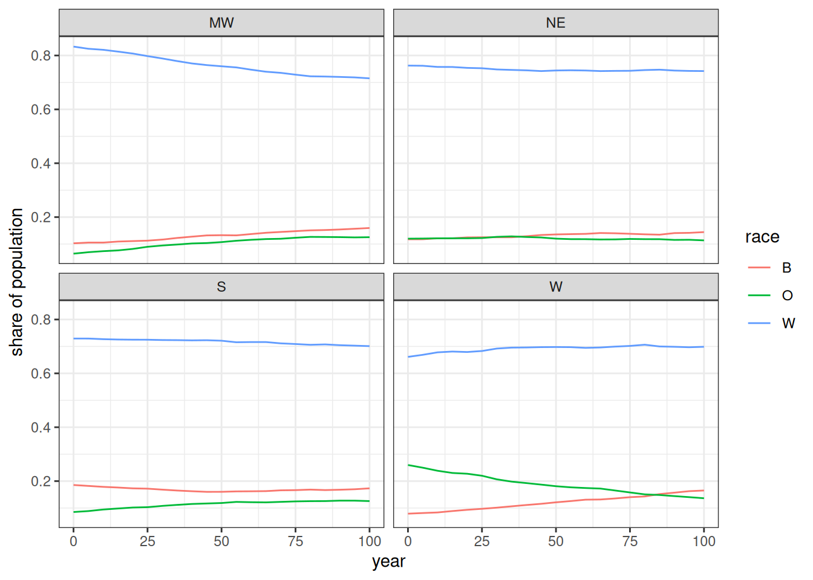
Figure 12, shows the changing distributions of race within each region. The biggest divergence is in the W region where the O group declines as it becomes distributed more evenly across the other regions over time. The W region is also the only region where the W race group did not decline.
I can use the augment_unions function to get the race of husband and wife and use this to calculate the log-odds ratio of each interracial pairing.
expected <- tibble(
pair = c("W:B", "W:O", "B:O"),
expected = c(-4, -2, -3) * 2
)
pop_end |>
augment_unions() |>
count(race_w, race_h) |>
pivot_wider(names_from = c(race_w, race_h), values_from = n) |>
mutate(
log_odds_W_B = log(W_B) + log(B_W) - log(W_W) - log(B_B),
se_W_B = sqrt(1 / W_B + 1 / B_W + 1 / W_W + 1 / B_B),
log_odds_W_O = log(W_O) + log(O_W) - log(W_W) - log(O_O),
se_W_O = sqrt(1 / W_O + 1 / O_W + 1 / W_W + 1 / O_O),
log_odds_B_O = log(B_O) + log(O_B) - log(B_B) - log(O_O),
se_B_O = sqrt(1 / B_O + 1 / O_B + 1 / B_B + 1 / O_O)
) |>
select(starts_with("log_odds"), starts_with("se_")) |>
pivot_longer(
everything(),
names_to = c(".value", "pair"),
names_pattern = "(log_odds|se)_(.*)"
) |>
mutate(pair = str_replace(pair, "_", ":")) |>
left_join(expected, by = "pair") |>
ggplot(aes(x = pair, y = log_odds)) +
geom_point() +
geom_linerange(
aes(
ymin = log_odds - 1.96 * se,
ymax = log_odds + 1.96 * se
)
) +
geom_point(aes(y = expected), color = "red", alpha = 0.7) +
coord_flip() +
labs(x = "interracial pairing", y = "log-odds")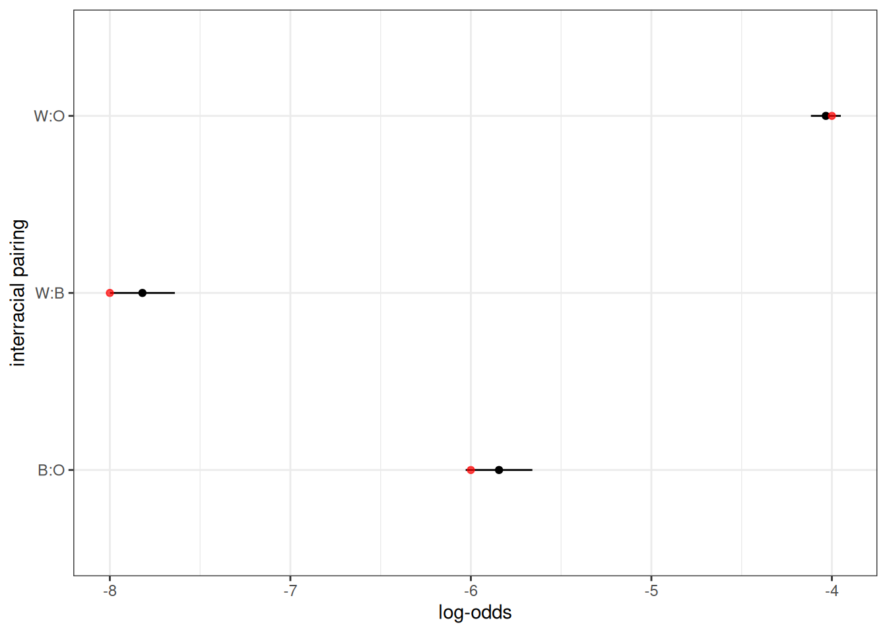
Figure 13 shows the observed log odds ratio of a given interracial pairing in comparison to that expected from the input values (twice the provided value). They closely align.
I can also show that no marriages occurred across regions.
pop_end |>
augment_unions() |>
count(region_w, region_h)
#> # A tibble: 4 × 3
#> region_w region_h n
#> <chr> <chr> <int>
#> 1 MW MW 10021
#> 2 NE NE 6152
#> 3 S S 15888
#> 4 W W 9053Finally, I can get the observed migration rates using calculate_transition_rates.
calculate_transition_rates(
pop_end,
group = "region",
time_breaks = c(0, 100),
age_breaks = c(seq(0, 35, 5), seq(45, 85, 10)),
conf_level = 0.95
) |>
ggplot(aes(x = age_start, y = rate_transition)) +
geom_ribbon(aes(ymin = conf_low, ymax = conf_high),
color = NA, fill = "grey60") +
geom_point(size = 0.5) +
geom_line(data = usa_2000_migration, aes(y = rate),
linetype = 2, color = "red") +
geom_vline(xintercept = 18, linetype = 2) +
facet_grid(origin ~ destination) +
labs(x = "age", y = "migration rate")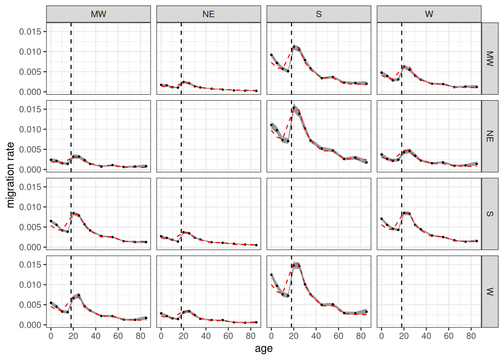
Figure 14 shows the age-specific migration rates from the simulation in comparison to the input rates. Because dependents travel with their household, not independently, we don’t expect the values to match under age 18. Beyond that age range, the values fit closely to the input rates.
Going Further
Other vignettes provided here go into more detail on other features of Hammel.
- The Demographic Transition vignette shows how to vary rates by time within the same simulation and how to extract kinship information from the simulation output.
- The Second Demographic Transition vignette shows how to add union dissolution, remarriage, and cohabitation into the simulation model.
- The Multigroup Intermarriage vignette shows how to vary inheritance and matching models by time within the same simulation and how to develop custom inheritance models.
Hammel is in active development so if you have questions or would like to see a new feature implemented, feel free to open an issue.